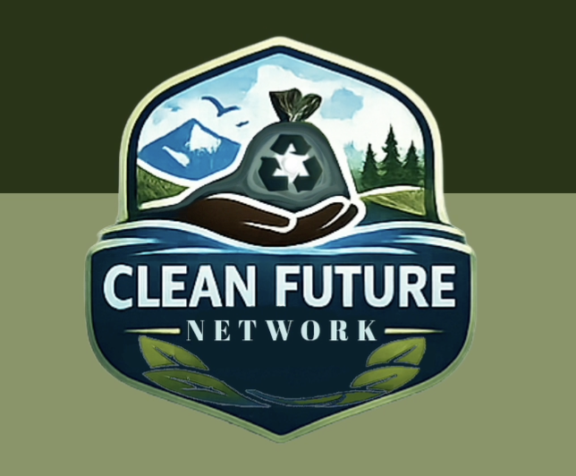
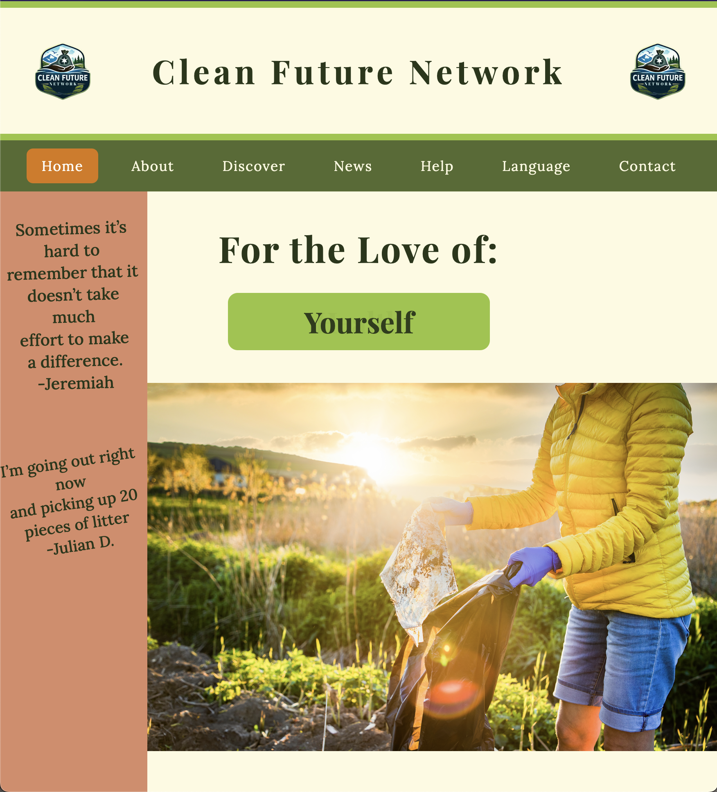
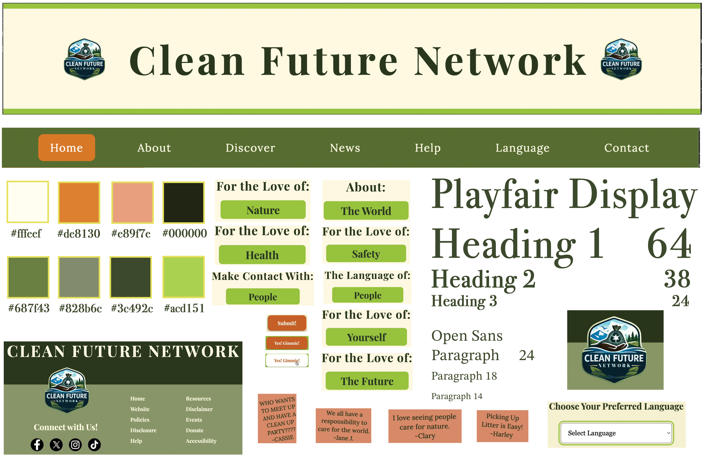
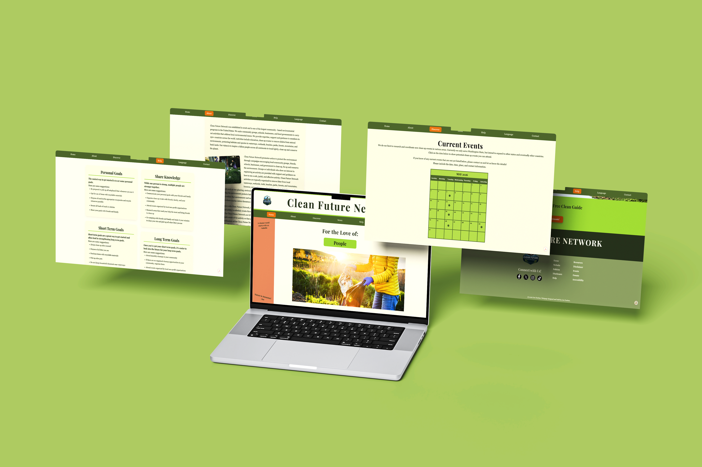
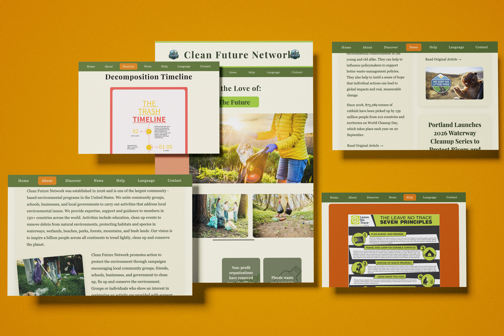
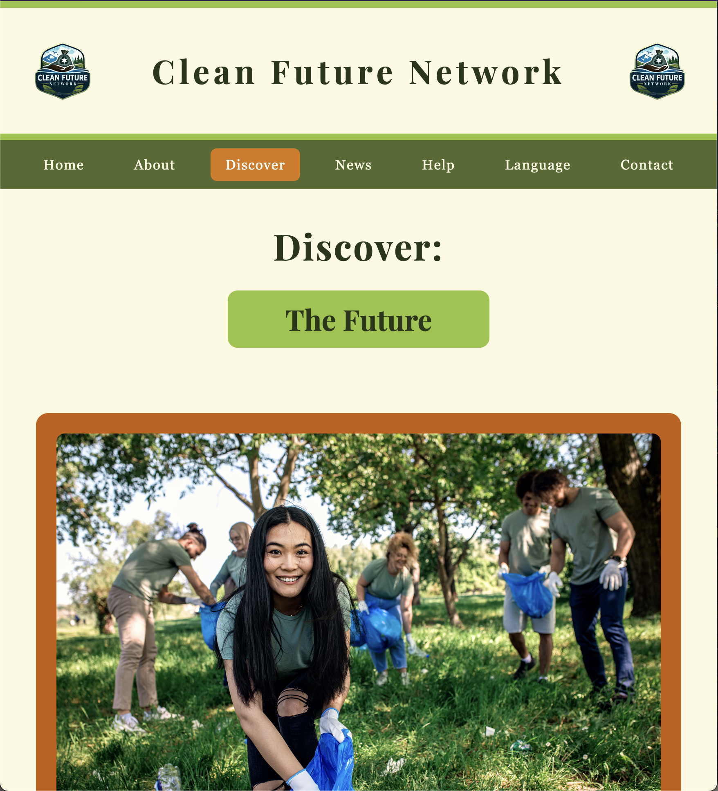
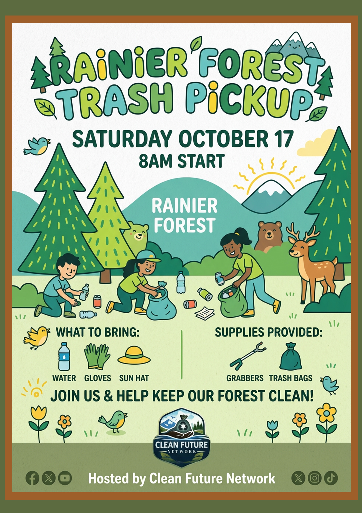
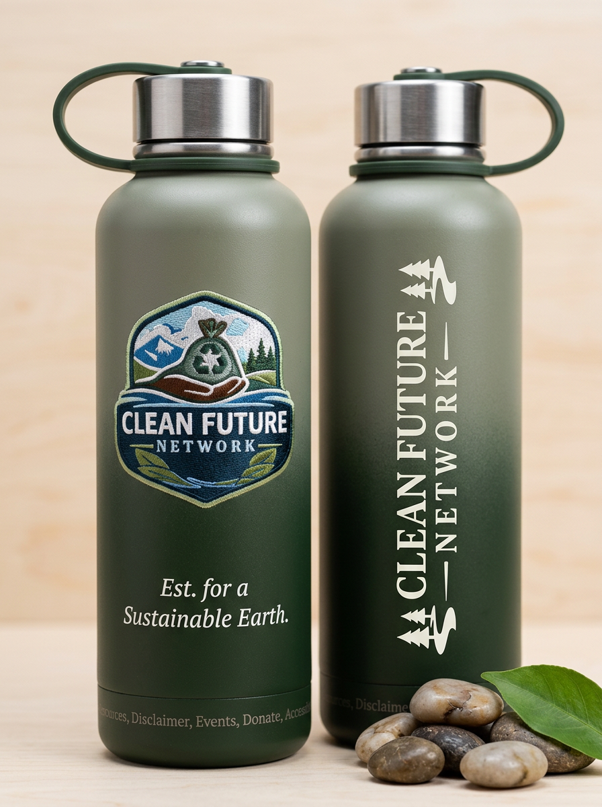
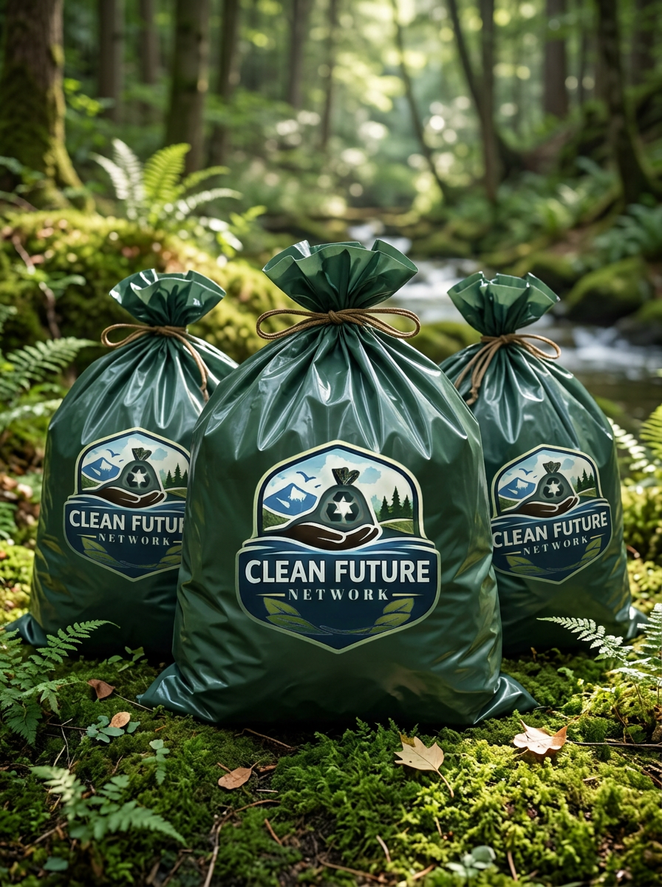

Environmental information is most useful when people can find it, understand it, and act on it.
- Organize educational resources, news, and events.
- Make information easy to scan and navigate.
- Connect visitors with meaningful ways to participate.
Figma
Adobe Photoshop
Adobe Dreamweaver
Brand Designer
UX/UI Designer
Web Designer
Independent Class Project
Brand Identity
Logo Design
Information Architecture
Website UI
Interactive Prototype
Envato Elements
Licensed assets and mockups

A CONCEPTUAL NONPROFIT BRAND & WEBSITE
Turning environmental awareness into meaningful action.
Clean Future Network is a conceptual nonprofit brand and website designed to connect environmental education, sustainability resources, and community participation through one cohesive digital experience.
Environmental information is most useful when people can find it, understand it, and act on it.
A welcoming digital platform built around clear navigation and practical engagement.
EXPLORE THE DESIGN
Explore the page layouts, navigation, and interactive flows of the website concept.

View Interactive PrototypeFROM FIRST SKETCH TO FINISHED EXPERIENCE
Environmental education and community-focused websites informed the site's structure. Early sketches established page hierarchy and navigation, while the visual identity brought the experience together through natural colors, typography, and imagery.

Sketches explored navigation, page hierarchy, and the organization of key content.

Natural colors, typography, and imagery established a welcoming, environmentally focused identity.

The visual system and page structure came together in a cohesive website concept.
A CONNECTED MULTI-PAGE EXPERIENCE
A consistent visual system connects environmental education, news, and community resources while allowing each section to serve a distinct purpose.


A CLOSER LOOK



Your mission deserves a visual identity that connects.
CONTACT ME